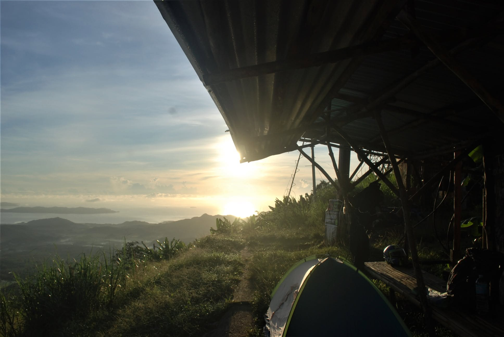
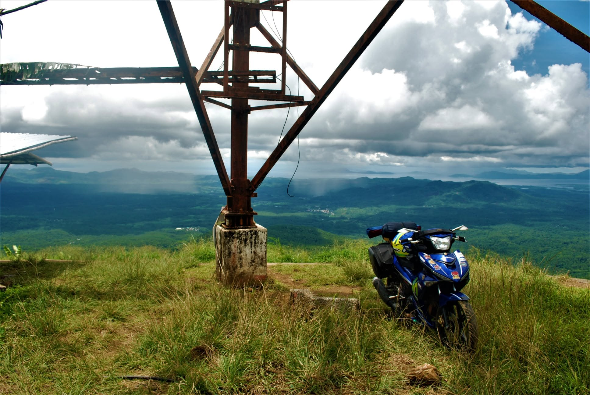

Mt. Buhangin
Mainit, Surigao del Norte
I thought there was a road on the map. When I got there, the road was almost nothing like what I expected.
In real time, the trail was muddy and grassy. It had been raining a little, and my tires were road tires—not adventure tires.
For a moment, I thought about turning back. My motorcycle wasn't really built for that kind of terrain.
But I never surrendered.
I kept pushing until I finally reached the top.
"I was on the top of the world."
From the summit, I had a 360-degree view of Surigao del Norte. That feeling made every difficult section of the road worth it.
I stayed there and camped for the rest of the night.
Reaching the top.
The road almost made me turn around, but reaching the summit made every difficult kilometer worth it.
Mt. Buhangin

